JOYSOUND MAX2
ついにカラオケもハイレゾの時代へ！
曲数No.1史上最多の27.9万曲を搭載
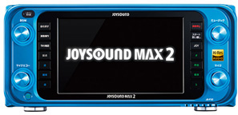
JOYSOUND 響Ⅱ
上質な音と映像。
カラオケタイムを充実させるこだわりの最新機能。
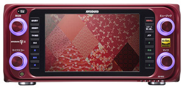
JOYSOUND f1
曲、音、映像、操作。その進化は、
すべてのお客様にご満足いただくために
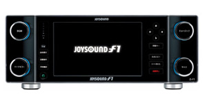
NEXTシリーズ
UGA-01の改良型で、音・映像をリニューアルして、本体にモニター(ソフトタッチパネル)も搭載された。
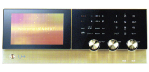
UGA-01
neonR2 NMU-R20の改良型で採点機能を収納
HDDを2基搭載し、収納曲を16万曲以上にする。
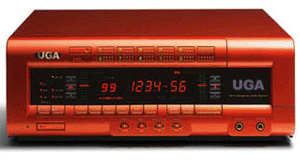
UGA neon R2
neonR NMU-R10の改良型でHDDを２基搭載。
採点等は別途ユニットで対応した。
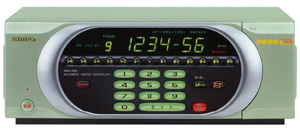
BK-U10
neonR NMU-R10の改良型で採点機能を収納。
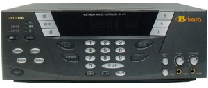
NMU-R10
neon NMU-M10の改良型、ここからHDDに音・映像同時収納になる。
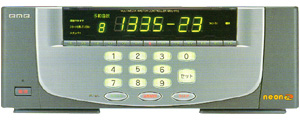
NMU-M10
BMB初代の通信カラオケ、CDチェンジャー内蔵。
CDロムや内蔵HDDで対応した。
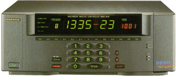
MCO-V30
パイオニアBeMAX'Sの改良型。
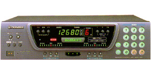
MAX-V3
HDD内蔵、映像はCDロムにて対応。音と映像が合わない場合もあった(映像がランダム選択のため)
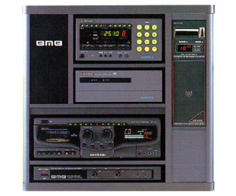
VI-M450
450枚のCVDディスク(動画)が収納できた。
プレイヤー2台の連動も可能。
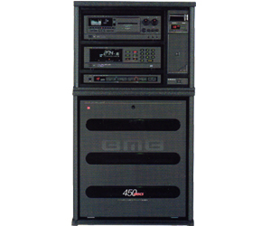
LC-V50Ⅱ
30センチレーザーディスク、140枚収納のオートチェンジャー方式 プレイヤー2台内蔵
映像・音は映画並み本格的な動画が再生できる。但し、プレイヤーが重くて大きすぎた。"カラオケ界の最大の作品"
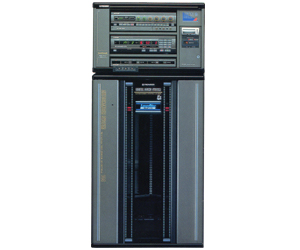
CDI-M1500
静止画のため、1枚のディスクに多量の音・映像を収納できた(1枚で50曲もあった)
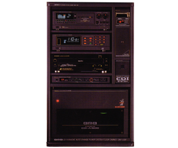
LK-V38
レーザーディスクに音、映像（動画）をLDプレイヤー
に手動でディスクを入れて動作をしていた。
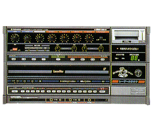
CD-M150
CDディスクに音、LDディスクに映像を入れ同時再生（スーパーインポーズ方式）現在の通信カラオケ映像はここからスタート
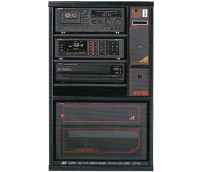
K-3600
この頃より、1本のテープに4曲から8曲となり多くの曲を収納できるようになった。
K-2000にカセットデッキを収納し録音可能にする。
Wデッキになり次の曲の準備が簡単になった。
又、カセットテープ録音も出来て好評であった。
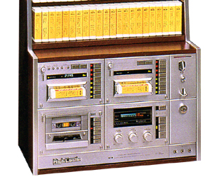
KJ-303
初めてダイヤル式ワイヤレスチューナー内蔵のワイヤレスマイクが使用できるようになった。
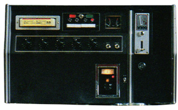
KJ-577
KJ-303モデルチェンジ型 プレイヤー２台収納交互連続使用可能機能
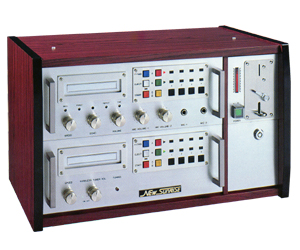
KJ-3001
KJ-1008の改良型
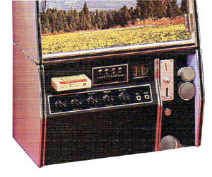
KJ-1008
テープ式 カラオケジューク ４トラックステレオ方式 １本のテープに４曲収納。初めてマイクにエコーをかけて使用する
"初代カラオケ"
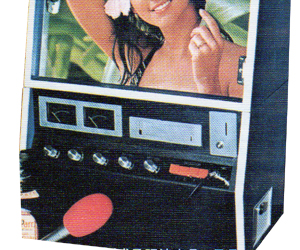
JB-3800
ジュークBOX、45cm ドーナツ盤レコード50枚収納A面B面で100曲を自動演奏する(日本ビクター製)
当時、喫茶店等で音楽を聞きながらコーヒーを呑むのが若者のステータス、1曲10円だった。
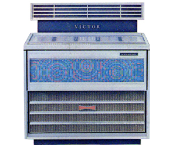
今までのカラオケ・現在のカラオケ
「4トラック」「カセットタイプ」の
カラオケが登場
クラリオン・松下がカラオケ市場導入。
東芝・三洋・コロムビアなど参入。
東映ビデオが初の映像による業務用「VTRカラオケ」を開発。
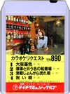
NCDカラオケが登場
歌詞ブックを見て、唄いたい曲に合わせて唄った。
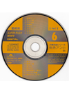
AVカラオケが登場
NCDディスクに歌詞を収録し歌詞本を不用とした。歌詞色変りはしなかった。
この頃より曲目リスト、早見目次本が登場した。
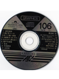
AVZカラオケが登場
歌詞が画面にでるようになった。
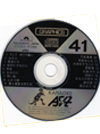
SAVカラオケが登場
AVZディスクにスーパーインポーズ方式を採用し映像を選択して歌詞と背景映像を同時に映すようになった。
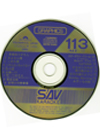
CDIカラオケが登場
CDIは、CPUが搭載された本体（コマンダー）により画像を処理して鮮明なスチール画像と歌詞が同時に収納1枚のディスクで最大54曲まで収録を可能とした。
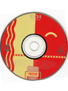
日光堂・CD動画カラオケ「CVDカラオケ」登場。
CDディスクに動画映像と歌詞を収録し、リアルタイムで歌詞も色変化バリエイション豊富な音と、映像を映すCD最終盤となった。
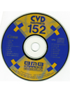
LDカラオケが登場。
レザーの光でデジタル信号を読み取る非接触方式で、両面形 音声・映像を同時再生
色変りテロップも活躍した。20cmディスクに続き30cmのディスクも発売された。
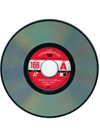
ビクター・松下などから「VHDカラオケ」登場。
NTSC方式でディスクに溝がなく、静電容量方式 両面形針で信号を読み取り、音声・映像を同時再生する ディスク直径26cmプラスティックケースに収納されていた。
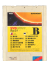
現在では、1990年代以降ブロードバンド環境の発達後は、通信カラオケが主流となっている。
コマンダーとして、HDDを搭載する機種が主流になった。
当初、HDDの容量は120GBであったが最新機種では、3TBまで容量が拡張している。
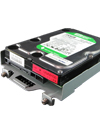